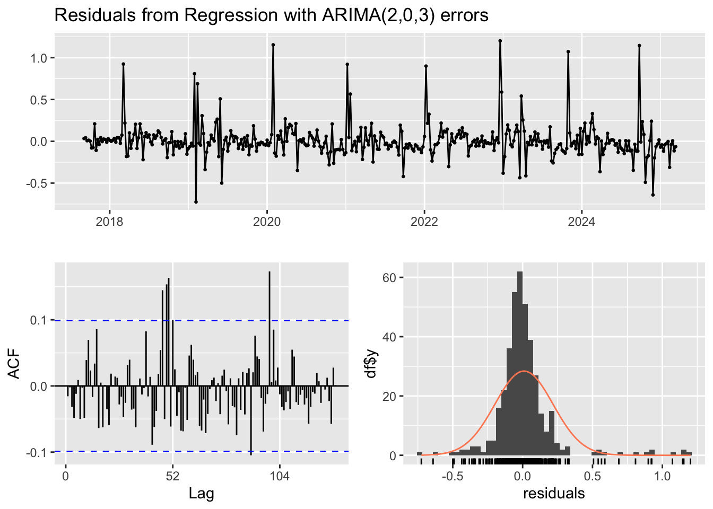

df_fert_monthly <- raw_fert %>% dplyr::transmute(# Excel serial date → Datedate =as.Date(as.numeric(Month), origin ="1899-12-30"),# Choose ONE fertiliser series (UK-produced AN)fertiliser =parse_number(`AN – UK produced (34.5% N)`) ) %>% dplyr::filter(!is.na(date), !is.na(fertiliser)) %>% dplyr::arrange(date)
Warning: There was 1 warning in `dplyr::transmute()`.
ℹ In argument: `fertiliser = parse_number(`AN – UK produced (34.5% N)`)`.
Caused by warning:
! 16 parsing failures.
row col expected actual
46 -- a number N/a
49 -- a number N/a
57 -- a number N/a
58 -- a number N/a
60 -- a number N/a
... ... ........ ......
See problems(...) for more details.
# sanity checkssummary(df_fert_monthly)
date fertiliser
Min. :2017-01-01 Min. :186.1
1st Qu.:2018-12-01 1st Qu.:242.2
Median :2020-12-01 Median :283.3
Mean :2021-04-09 Mean :337.9
3rd Qu.:2023-08-01 3rd Qu.:380.0
Max. :2026-01-01 Max. :840.9
range(df_fert_monthly$date)
[1] "2017-01-01" "2026-01-01"
nrow(df_fert_monthly)
[1] 93
library(dplyr)library(readr)library(zoo)
Attaching package: 'zoo'
The following objects are masked from 'package:base':
as.Date, as.Date.numeric
# Join one at a time and check after each stepdf_weekly <- df_price_weeklycat("after price:", nrow(df_weekly), "\n")
after price: 8308
df_weekly <- df_weekly %>% dplyr::left_join(df_fuel_weekly_aligned, by ="date")
Warning in dplyr::left_join(., df_fuel_weekly_aligned, by = "date"): Detected an unexpected many-to-many relationship between `x` and `y`.
ℹ Row 1 of `x` matches multiple rows in `y`.
ℹ Row 1 of `y` matches multiple rows in `x`.
ℹ If a many-to-many relationship is expected, set `relationship =
"many-to-many"` to silence this warning.
cat("after fuel:", nrow(df_weekly), "\n")
after fuel: 134162
df_weekly <- df_weekly %>% dplyr::left_join(df_cpi_weekly, by ="date")cat("after cpi:", nrow(df_weekly), "\n")
after cpi: 134162
df_weekly <- df_weekly %>% dplyr::left_join(df_api_weekly, by ="date")cat("after api:", nrow(df_weekly), "\n")
after api: 134162
df_weekly <- df_weekly %>% dplyr::left_join(df_fert_weekly, by ="date")cat("after fert:", nrow(df_weekly), "\n")
after fert: 134162
df_weekly <- df_weekly %>% dplyr::left_join(df_sppi_weekly, by ="date")cat("after sppi:", nrow(df_weekly), "\n")
after sppi: 134162
df_weekly <- df_weekly %>% dplyr::arrange(date)# ── Build df_weekly ───────────────────────────────────────────────────────────df_weekly <- df_price_weekly %>% dplyr::left_join(df_fuel_weekly_aligned, by ="date") %>% dplyr::left_join(df_cpi_weekly, by ="date") %>% dplyr::left_join(df_api_weekly, by ="date") %>% dplyr::left_join(df_fert_weekly, by ="date") %>% dplyr::left_join(df_sppi_weekly, by ="date") %>% dplyr::arrange(date)
Warning in dplyr::left_join(., df_fuel_weekly_aligned, by = "date"): Detected an unexpected many-to-many relationship between `x` and `y`.
ℹ Row 1 of `x` matches multiple rows in `y`.
ℹ Row 1 of `y` matches multiple rows in `x`.
ℹ If a many-to-many relationship is expected, set `relationship =
"many-to-many"` to silence this warning.
# Replace stopifnot with informative checkcat("df_weekly rows:", nrow(df_weekly), "\n")
Ljung-Box test
data: Residuals from Regression with ARIMA(1,0,1)(0,0,1)[52] errors
Q* = 108.53, df = 75, p-value = 0.006864
Model df: 3. Total lags used: 78
lb_full <-Box.test(residuals(fit_full), lag =20, type ="Ljung-Box")cat("Ljung-Box p (lag 20):", round(lb_full$p.value, 4),ifelse(lb_full$p.value >0.05, "✓ White noise", "✗ Autocorrelation remains"), "\n")
Ljung-Box p (lag 20): 0.6111 ✓ White noise
cat("\n── Residual Diagnostics: CPI Model ──\n")
── Residual Diagnostics: CPI Model ──
forecast::checkresiduals(fit_cpi)

Ljung-Box test
data: Residuals from Regression with ARIMA(2,0,3) errors
Q* = 90.59, df = 73, p-value = 0.07969
Model df: 5. Total lags used: 78
lb_cpi <-Box.test(residuals(fit_cpi), lag =20, type ="Ljung-Box")cat("Ljung-Box p (lag 20):", round(lb_cpi$p.value, 4),ifelse(lb_cpi$p.value >0.05, "✓ White noise", "✗ Autocorrelation remains"), "\n")
Ljung-Box p (lag 20): 0.8472 ✓ White noise
# To forecast, we need future values of regressors.# Use last observed values carried forward (naive assumption).h <-52last_row <-tail(reg_diff, 1)xreg_future_full <-matrix(rep(as.numeric(last_row[, c("d_fuel_price","d_cpi","d_api","d_fertiliser","d_sppi")]), h),nrow = h, byrow =TRUE,dimnames =list(NULL, c("d_fuel_price","d_cpi","d_api","d_fertiliser","d_sppi")))xreg_future_cpi <-matrix(rep(last_row$d_cpi, h), nrow = h,dimnames =list(NULL, "d_cpi"))fc_full <- forecast::forecast(fit_full, xreg = xreg_future_full, h = h)fc_cpi <- forecast::forecast(fit_cpi, xreg = xreg_future_cpi, h = h)
Linear Regression with ARMA Errors — UK Weekly Fruit & Vegetable Prices
Data and Sample
Following aggregation to one mean price per week and joining all predictor series via LOCF alignment, the effective estimation sample covers September 2017 to February 2026 — 393 observations after dropping weeks with any missing regressor, and 392 after first differencing. The start date is determined by fertiliser data availability, which begins in January 2017, with the first complete weekly observation appearing in September 2017 after LOCF propagation. All models are therefore estimated on an 8.5-year window.
A note on data construction: df_price_weekly contained 8,308 rows (multiple commodities per week) which inflated the join to 134,162 rows before the groupby aggregation collapsed it back to 527 unique weekly dates. The group-level mean correctly handles this but it’s worth noting that the price variable entering the regression is an average across all fruit and vegetable commodities in the dataset rather than a single price series.
Stationarity
ADF tests on all variables in levels confirmed that price is stationary (p < 0.01) while all five predictors — fuel price (p = 0.707), CPI (p = 0.093), API (p = 0.724), fertiliser (p = 0.728), and SPPI (p = 0.740) — are non-stationary. To avoid spurious regression from mixing integrated and stationary series, all predictors were first-differenced before entering the model. The response variable (differenced price) was constructed consistently, yielding a stationary regression framework throughout.
Model Specifications
Four models were estimated using auto.arima with the xreg argument, which fits a linear regression on the specified predictors while modelling the residual autocorrelation structure as an ARMA process:
Model 1 — Full model (all predictors): The selected error structure was ARIMA(1,0,1)(0,0,1)[52], a model with AR(1), MA(1), and a seasonal MA term at lag 52. This is a richer error specification than the baseline, suggesting the regressors absorb some but not all of the autocorrelation structure.
Model 2 — CPI only (Granger-motivated): Selected ARIMA(2,0,3) errors — a more complex non-seasonal ARMA structure. This model achieved the best AIC of all four specifications (−101.33), making it the statistically preferred model.
Model 3 — CPI + Fuel: Also selected ARIMA(2,0,3) errors with an additional intercept term. AIC of −99.44, marginally weaker than the CPI-only model.
Model 4 — ARIMA baseline (no regressors): Selected ARIMA(2,0,1)(0,0,1)[52] with zero mean. AIC of −99.36 and the best BIC of all models (−79.50), reflecting its parsimony.
Model Comparison
Model
RMSE
MAE
MASE
AIC
BIC
Full (all predictors)
0.2101
0.1131
0.6561
−89.76
−54.02
CPI only
0.2080
0.1188
0.6895
−101.33
−73.53
CPI + Fuel
0.2071
0.1190
0.6901
−99.44
−63.70
ARIMA baseline
0.2098
0.1128
0.6545
−99.36
−79.50
The results present a nuanced picture. By AIC, the CPI-only model is preferred. By BIC — which penalises complexity more heavily — the pure ARIMA baseline wins, suggesting the parsimony gain from dropping all regressors outweighs their marginal predictive contribution when degrees of freedom are properly penalised. By RMSE and MAE, the differences across models are very small (RMSE range: 0.207–0.210), indicating that no model dominates substantially in terms of point forecast accuracy. The full model has the worst AIC despite having the most parameters, confirming that adding API, fertiliser, and SPPI alongside CPI and fuel adds no useful predictive information.
Coefficient Significance — Full Model
Term
Estimate
Std. Error
t-stat
Significant
AR(1)
0.827
0.034
24.41
✓ (5%)
MA(1)
−0.987
0.012
−85.30
✓ (5%)
SMA(1)
0.171
0.055
3.08
✓ (5%)
Δ fuel_price
−0.0004
0.005
−0.08
—
Δ CPI
0.0016
0.005
0.33
—
Δ API
0.0049
0.009
0.56
—
Δ fertiliser
−0.0001
0.0004
−0.33
—
Δ SPPI
0.0020
0.015
0.13
—
This is the most important result in the table. Every ARMA error term is highly significant, while every regression coefficient is completely insignificant with t-statistics all below 0.6. This means the predictors — including CPI, which was the strongest Granger-cause — add no statistically significant explanatory power to price changes once the autocorrelation structure is accounted for. The model is effectively capturing price dynamics through its own lagged errors, not through the macroeconomic regressors.
Residual Diagnostics
Both the full model and the CPI-only model pass the Ljung-Box test at lag 20 (full model p = 0.611, CPI model p = 0.847), confirming that short-run autocorrelation in residuals has been adequately captured. The more stringent checkresiduals() test at 78 lags flags marginal autocorrelation in the full model (p = 0.007) but not in the CPI model (p = 0.080), giving the CPI-only specification a slight edge on residual adequacy as well as AIC.
Forecast
Both forecast plots show the 52-week ahead prediction of weekly changes in the price index (Δ price), not the level. Since the models are fit on first-differenced data, the forecasts converge rapidly toward zero change — consistent with the absence of a drift term and the mean-reverting nature of differenced price series. The prediction intervals widen substantially over the horizon, reflecting genuine uncertainty about future macroeconomic conditions. The regressor values are held fixed at their last observed differenced values for the forecast period, which is a conservative assumption but unavoidable without separate forecasts for CPI, fuel, and other inputs.
Synthesis and Interpretation
The central finding from the regression with ARMA errors analysis is that macroeconomic and agricultural cost predictors do not contribute statistically significant explanatory power to weekly UK fruit and vegetable price changes once the autocorrelation structure is controlled for. This is a striking complement to the Granger causality results, which showed CPI as a significant predictor at monthly and quarterly frequencies. The reconciliation is that Granger causality operates at the level of the raw series and captures longer-horizon predictability, while the regression with ARMA errors operates on first-differenced weekly changes where the signal-to-noise ratio is much lower and the ARMA terms absorb most of the predictable structure.
The BIC-preferred model is the pure ARIMA(2,0,1)(0,0,1)[52] baseline, suggesting that for weekly price change prediction, a well-specified time series model without external regressors is as good as — or better than — any combination of macroeconomic covariates tested here. This does not contradict the Granger findings; it means that while CPI movements precede price movements at monthly and quarterly horizons, the week-to-week transmission is too noisy and delayed to be captured by contemporaneous differenced regressors in a regression framework.